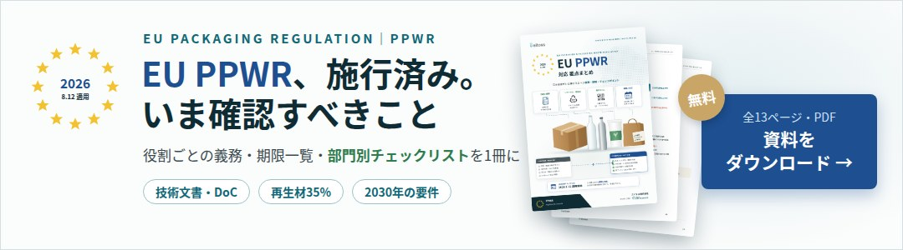

EUの包装・包装廃棄物規則（PPWR）の要件のなかで、技術面での影響が最も大きいもののひとつが、プラスチック包装の再生材含有率です（7条）。一般的なプラスチック包装では、2030年に35%、2040年に65%の再生材を使うことが求められます。
「うちの製品は工業用で清浄度が重要だから、再生材の要件は関係ないのでは」と考える企業もありますが、PPWRには業種を理由とした一般的な除外はありません。精密部品や電子部品の専用容器、トレイ、発泡緩衝材なども、樹脂製であれば対象になり得ます。
本記事では、7条の基本、含有率の計算の考え方、使える除外・使えない除外、そして2030年に向けて品質との両立が課題になる理由を解説します。
出典：EUR-Lex「Regulation (EU) 2025/40」第3条、第6条、第7条 https://eur-lex.europa.eu/eli/reg/2025/40/oj
包装への要求事項と「よくある誤解」をまとめた資料を無料でダウンロードいただけます。
PPWR 7条とは｜プラスチック包装の再生材含有率
7条は、プラスチック包装に一定割合の使用済みプラスチック由来の再生材（PCR：Post-Consumer Recycled content）を含めることを求める条文です。工場内の端材など、製造工程で出たプラスチック（プレコンシューマー材）は、原則としてこの再生材に含まれません。
求められる含有率
| 時期 | 一般的なプラスチック包装の最低含有率 |
|---|---|
| 2030年1月1日〜 | 35% |
| 2040年1月1日〜 | 65% |
上の表は、食品用などの特定の用途に当たらない「その他のプラスチック包装」の場合です。包装の種類によって求められる率は異なります。産業用途に一般的な例外はないため、一般のプラスチック包装に分類される場合は、2030年の35%が基本線になります。
含有率は「包装の種類ごと・工場ごと・年平均」で計算する
再生材の比率は、すべての包装に同じ率を一律に当てはめるのではなく、包装の種類・形式ごとに、製造工場単位の年平均で計算します。計算方法と検証方法を定める実施法令は、2026年12月31日までに採択される予定です。
規則の本文には「35%」とだけ書かれていて、細かい計算方法が分からないのは、算定方法が下位の法令に委ねられているためです。PPWRを規則本文、委任法令・実施法令、ガイダンス、加盟国の措置という階層で読む考え方は、PPWR（EU包装・包装廃棄物規則）とは？で解説しています。
精密部品・電子部品の包装で対象になり得るもの
7条はプラスチック包装が対象のため、包装のどの部分が樹脂でできているかによって影響が変わります。日本の製造業でよく使われる包装を例にすると、次のとおりです。
| 包装 | 7条との関係 |
|---|---|
| 専用容器・製品ケース・トレイ | 樹脂製なら最重要の対象。容器本体だけでなく保持部品、シール、フィルター、ラッチなども含めて評価する |
| 発泡PE・PP・PSなどの緩衝材 | 樹脂製なら対象。再生材グレードの機械特性や発塵の確認が必要 |
| 防湿袋・ESD袋 | 袋のプラスチック層も対象になり得る。重量比によっては5%未満の除外を使える可能性がある |
| ストレッチフィルム・ストラップ | 樹脂製なら対象 |
| 段ボール外装・金属コンテナ | 7条はプラスチック包装の条文のため、本体には直接適用されない |
なお、プラスチック包装のバイオベース原料について定めた8条には、現時点で数値の義務は設定されていません。再生材の要件と混同しないよう注意が必要です。
なお、段ボールや金属の包装も、リサイクル可能性（6条）や包装の最小化（10条）など、ほかの要件からは免除されません。
「使える除外」と「使えない除外」
7条にはいくつかの除外が定められていますが、対象は限られています。
使える可能性がある除外
- contact-sensitive packaging（接触に敏感な包装）：食品、飼料、化粧品、医療機器、体外診断用医療機器、医薬品、危険物など、特定のEU法の対象となる製品に使う包装の一部（7条5項）
- 包装ユニットの総重量の5%未満を占めるプラスチック部品（7条5項）
- 医薬品、医療機器、乳幼児用食品、危険物の輸送などに関する個別の除外
追加の除外については、2028年1月1日から評価が行われ、既存の措置も見直されることになっています。
使えない除外｜「高純度・クリーン用途だから免除」は成立しない
contact-sensitive packagingは、PPWR 3条49号で定義され、その対象は上記のように特定のEU法の対象製品に限られています。一般的な工業製品や電子部品は、この列挙に含まれていません。
製品が微細な汚染に非常に敏感で、包装に高い清浄度が求められる場合でも、その事実だけで7条の除外を使うことはできません。品質上の要求が明確に存在することと、PPWR上の法定の除外に当たることは、別の問題です。
業界として、高純度用途で再生材が技術的に成立しないことを示すデータが蓄積されれば、将来の政策議論の材料にはなり得ます。ただし、それは現在の義務を免れる理由にはなりません。
将来、適切なリサイクル技術の利用可能性や安全上の要件を踏まえ、欧州委員会が委任法令で特定の包装について除外を追加する余地はあります。しかし、現時点で個々の企業が自社の判断で「高純度だから7条は免除」とすることはできない点に注意が必要です。
危険物の除外は「業種」ではなく「実際の輸送構成」で判断する
6条・7条・29条には、それぞれ危険物の内陸輸送に関する指令（Directive 2008/68/EC）に基づく危険物輸送の包装についての除外があります。ただし、これも業種単位で使えるものではありません。製品そのものに加え、同梱する乾燥剤や付帯する薬剤・ガスなどを含めた実際の輸送構成ごとに、危険物に該当するかを確認する必要があります。
「工業用だから対象外」などの誤解と実際のルールを整理した資料を無料でダウンロードいただけます。

判定の出発点は「部品ごとの重量」
7条への対応を考えるうえで欠かせないのが、包装を部品ごとに分解し、材質と重量を把握すること（BOM化）です。
- どの部品がプラスチックで、どの樹脂でできているのか
- 各部品が包装ユニット全体の重量の何%を占めるのか（5%未満の除外に当たるか）
- 現在、再生材がどの程度使われているのか
こうした情報がそろっていなければ、35%の要件がかかるのかどうかも、5%未満の除外が使えるのかどうかも判断できません。容器本体だけでなく、保持部品、シール、フィルター、緩衝材など、包装を構成するすべての部品が対象になります。カタログ値ではなく、実物を分解して部品ごとに重量を実測することが、判定の確実性を高めます。
樹脂のグレードや再生材の比率は、多くの場合、容器メーカーや樹脂メーカーが持っています。PPWRには、包装材のサプライヤーがメーカーに必要な情報を提供する義務（16条）があり、照会の法的な根拠になります。照会する項目や、社内でどの部門が何を確認するかは、資料のチェックリストにまとめています。
2030年に向けた最大の課題は「品質との両立」
精密部品や電子部品などの包装では、再生材を使うことで、次のような特性が変わる可能性があります。
- 発塵や、金属・イオンによる汚染
- アウトガス（材料から出る微量の揮発成分）
- 帯電防止・ESD性能（表面抵抗などの電気特性）
- 機械的な強度やシール性
- 輸送中の振動や落下に対する保護性能
製品に近い部位ほど、再生材の導入による品質リスクは高くなります。高い清浄度や低いアウトガスと再生材の使用が両立できるかは、試作と評価を経なければ分かりません。実際、清浄度の観点から「再生材0%」を製品の特長として打ち出している材料メーカーもあり、技術的なハードルは小さくありません。
顧客の承認まで含めると時間がかかる
包装の材質を変える場合は、顧客への変更通知（PCN：Product / Process Change Notification）や承認が必要になることもあります。材料の評価、再生材を使った試作、清浄度や強度の比較評価、顧客の承認、量産への切り替えまでには時間がかかります。2030年の期限から逆算すると、2029年末までに顧客の承認を得た量産仕様にしておく必要があり、今から情報の整理を始める必要があります。
2030年から逆算した時間軸のイメージ
専用容器を例に、2030年までの流れを大まかに並べると次のようになります。
| 時期 | 主な取り組み |
|---|---|
| 〜2027年 | 包装の部品構成と重量を確定し、容器メーカーに樹脂グレードや再生材の比率を照会する |
| 2027〜2028年 | 再生材を使った試作で、清浄度や強度などを現行材と比較評価する |
| 2028〜2029年 | 顧客への変更通知と承認を得る |
| 2029〜2030年 | 再生材35%とリサイクル設計に対応した仕様へ量産を切り替える |
| 2030年以降 | 2040年の65%に向けた設計を検討する |
実際には、評価項目の選び方や、防湿袋・緩衝材・フィルムなどほかの包装との進め方の違いもあります。段階ごとの対応事項は資料で整理しています。
コスト面でも、再生材と現行材の価格差より、評価・認定にかかる費用や品質リスクのほうが大きくなる可能性があります。予算は材料単価とは別枠で考えておくことが望ましいでしょう。
リサイクル可能性（6条）もあわせて確認が必要
再生材を使えば済むわけではありません。2030年からは、包装のリサイクル可能性が重量比で等級判定されます。
| 等級 | リサイクル可能性 | 2038年1月1日以降 |
|---|---|---|
| A | 95%以上 | 上市可能 |
| B | 80%以上 | 上市可能 |
| C | 70%以上 | 上市できない |
多材質の構成、ESD材、フィルター、シールなど、分別しにくい部品の扱いが等級を左右します。専用容器は、7条の再生材、6条のリサイクル設計、11条・27条の再使用の3つを同時に満たす必要があり、どれか1つを選べばよい関係ではありません。2035年からは、EUで実際に大規模に回収・選別・再生されていること（recycled at scale）も要件になります。
よくある質問
Q. 産業用の包装なら7条は適用されませんか？
A. 産業用途を理由とした一般的な除外はありません。一般的なプラスチック包装に分類される場合は、2030年に35%が基本となります。
Q. 工場内の端材を再利用した材料は再生材に数えられますか？
A. 7条の再生材は使用済みプラスチック由来（PCR）のもので、工場内の端材などのプレコンシューマー材は原則として含まれません。
Q. 金属や段ボールの包装にも再生材の要件はありますか？
A. 7条はプラスチック包装を対象とした条文です。ただし、リサイクル可能性（6条）や包装の最小化（10条）など、他の要件は材質を問わず適用されます。
Q. 小さなプラスチック部品も35%の対象ですか？
A. 包装ユニットの総重量の5%未満を占めるプラスチック部品は、7条5項の除外の対象です。該当するかどうかは、部品ごとの重量を把握しなければ判断できません。
Q. 単一の樹脂でできた容器なら、リサイクル設計の要件は満たせますか？
A. 現時点では、特定の樹脂や単一材であることだけを理由に「必ず適合する」と断言することはできません。リサイクル設計の基準は委任法令で定められ、採択期限は2028年1月1日です。
Q. 計算方法が決まってから対応を始めればよいですか？
A. 計算方法の実施法令を待っていると、試作・評価・顧客承認の期間が足りなくなるおそれがあります。部品ごとの材質と重量の把握は、計算方法が決まる前でも進められます。
まとめ
PPWR 7条では、一般的なプラスチック包装に2030年35%、2040年65%の再生材が求められます。除外は特定の用途や総重量の5%未満の部品などに限られ、「工業用・高純度だから免除」は成立しません。判定の出発点は、包装を部品ごとに分解し、材質と重量を把握することです。品質との両立と顧客承認の期間を考えると、2029年末が実質的な期限になります。
エイトスでは、包装への要求事項や、よくある誤解と実際のルールをまとめた資料をご用意しています。期限の全体像はPPWRの適用スケジュール一覧、技術文書での説明の仕方はPPWRのEU適合宣言書（DoC）と技術文書とは？もあわせてご覧ください。
再生材・リサイクル設計の論点を整理したPPWR対応資料を無料でダウンロードいただけます。